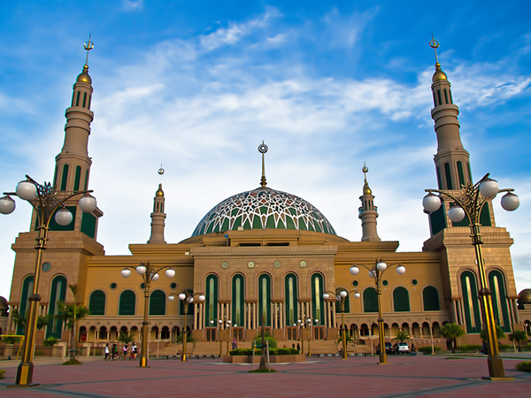

Islamic Center
Masjid Islamic Center atau lebih dikenal dengan Masjid Baitul Muttaqien adalah Masjid yang terletak di Teluk Lerong Ulu, Kota Samarinda, Provinsi Kalimantan Timur, Indonesia, yang merupakan salah satu masjid terbesar di Asia tenggara....